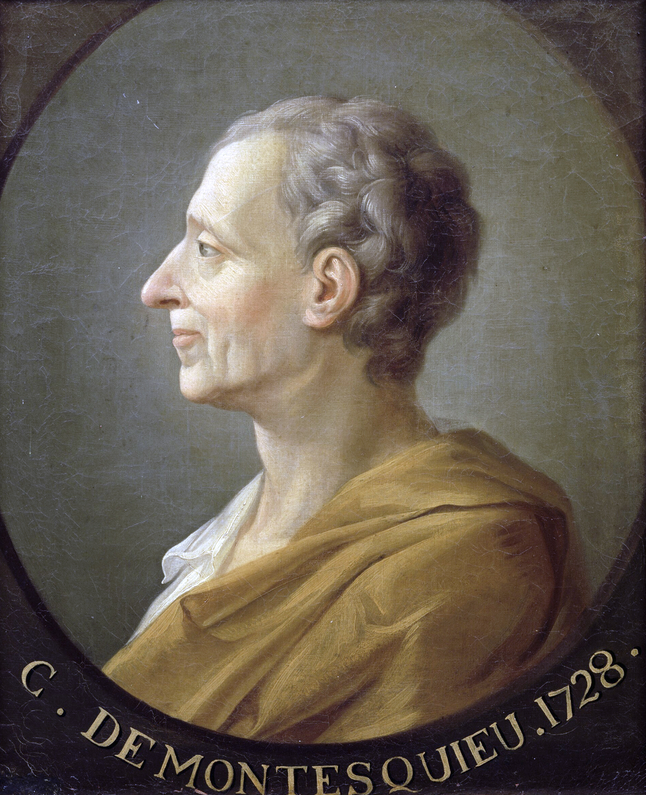

Histoire et éducation à la citoyenneté
09 / 12 réalité sociales
La Révolution américaine
1763 à 1791 · Les revendications et les droits
- citoyen
- démocratie
- droits
- justice
- philosophie
- régime politique
- révolution
- séparation des pouvoirs
- Siècle des Lumières

Mise en contexte
Après la création d'une première colonie de peuplement en 1608 en Virginie, douze autres colonies britanniques ont vu le jour en Amérique du Nord. Toutes ces colonies ont été peuplées principalement par des immigrants qui quittaient l'Europe pour des motifs religieux. En effet, après la Réforme, les pratiquants des nouvelles religions étaient souvent persécutés. C'est pourquoi ils décidaient d'aller vivre sur le nouveau continent.
Source : Alloprof
Concepts à l'étude
- Citoyen : une personne qui appartient à une société politique et qui y possède des droits, comme celui de voter.
- Démocratie : un régime politique où le pouvoir appartient au peuple, qui l'exerce par ses représentants.
- Droits : ce que chaque personne peut exiger, comme la liberté ou la sûreté, et que l'État doit protéger.
- Justice : le fait de traiter chacun selon ses droits, par des lois appliquées également à tous.
- Philosophie : la recherche de la vérité et de la sagesse par le raisonnement, au coeur du Siècle des Lumières.
- Régime politique : la manière dont le pouvoir est organisé et exercé dans un État.
- Révolution : un changement profond et rapide de l'organisation politique d'une société.
- Séparation des pouvoirs : le principe selon lequel les pouvoirs législatif, exécutif et judiciaire doivent être indépendants les uns des autres.
- Siècle des Lumières : le mouvement du 18e siècle qui place la raison, la tolérance et la liberté au centre de la pensée.
Situer dans le temps
Le Siècle des Lumières et la diffusion de la connaissance
Le Siècle des Lumières, aussi appelé l'âge des Lumières ou le mouvement des Lumières, est un mouvement culturel, intellectuel et artistique qui s'est développé principalement en Europe au 18e siècle. Il est caractérisé par une forte valorisation de la raison, de la tolérance, de la liberté individuelle et de l'émancipation. Les philosophes des Lumières, tels que Voltaire, Diderot et Rousseau, ont joué un rôle important dans ce mouvement en défendant des idées progressistes et en critiquant les institutions et les idées traditionnelles. Le Siècle des Lumières a également été marqué par de nombreuses découvertes scientifiques et techniques, ainsi que par une grande évolution de la pensée politique et sociale.
La diffusion du savoir
Le mouvement des Lumières tire son nom de la volonté des philosophes européens du 18e siècle de combattre les ténèbres de l'ignorance par la diffusion du savoir. Les idées des humanistes de la Renaissance se sont répandues tout au long des 15e, 16e, 17e et 18e siècles. Elles se sont propagées, comme nous le savons, grâce au développement de l'imprimerie, mais également aux correspondances et aux voyages. Les livres sont de plus en plus nombreux et accessibles, et l'apparition des journaux participe à la démocratisation des idées.
Des philosophes, comme John Locke en Angleterre, poussent ces idées de liberté, d'égalité et de justice au rang de droits fondamentaux. Des hommes tels que Voltaire et Montesquieu en France et Jean-Jacques Rousseau en Suisse contestent l'autorité absolue des rois et mettent de l'avant un parlementarisme dans lequel il y aurait une réelle séparation des pouvoirs législatif, exécutif et judiciaire.
Les philosophes et leurs idées
Les philosophes des Lumières étaient des partisans de la raison et de la liberté individuelle. Ils ont critiqué les institutions politiques et sociales de leur époque qui leur semblaient oppressives, c'est-à-dire injustes et irrationnelles. Ils ont défendu les idées de tolérance et de liberté de pensée. Leurs écrits ont exercé une influence considérable sur le développement de la pensée moderne et ont contribué aux révolutions américaine et française, ainsi qu'à la révolution industrielle.
Les philosophes des Lumières
Choisis un penseur, puis relève le défi


Défi : qui suis-je?
L'influence des Lumières sur la Révolution américaine
La révolution américaine a été influencée par les idées du Siècle des Lumières, en particulier en ce qui concerne les droits de l'homme et la liberté. Les philosophes du Siècle des Lumières, tels que John Locke et Jean-Jacques Rousseau, ont défendu l'idée que les gouvernements devraient être fondés sur le consentement des gouvernés et que les individus devraient avoir des droits inaliénables, tels que la liberté de parole et de religion. Ces idées ont été importantes pour les pères fondateurs des États-Unis dans leur lutte pour l'indépendance et la création d'une nouvelle nation fondée sur les droits de l'homme.
En outre, la révolution américaine a inspiré d'autres mouvements révolutionnaires dans le monde, y compris la Révolution française, qui a également été influencée par les idées du Siècle des Lumières.
Des exemples de droits fondamentaux
- Le droit à la vie, à la sûreté, à l'intégrité et à la liberté;
- le droit à la liberté de conscience et de religion;
- le droit à la liberté de réunion et d'association;
- le droit au respect de sa dignité, de son honneur et de sa réputation;
- le droit au respect de sa vie privée.
La guerre de Sept Ans
La guerre de Sept Ans est un conflit qui dura de 1756 à 1763 et qui opposa d'une part la France et l'Angleterre dans leurs ambitions coloniales, et d'autre part la Prusse et l'Autriche. Cette première guerre est mondiale, puisqu'elle se déroule sur tous les continents du globe ainsi que sur toutes ses mers.
Les conséquences pour l'Europe
D'un point de vue diplomatique, la Grande-Bretagne s'impose comme la grande puissance mondiale dominante. Non seulement son territoire n'a jamais été inquiété, mais sa flotte et son armée coloniale lui permettent de contrôler maintenant une grande partie de l'Amérique du Nord, de l'Inde et surtout de dominer les autres puissances sur les mers du globe. Le bilan humain, uniquement militaire, varie entre 600 000 et 700 000 morts. Le nombre de morts chez les populations civiles est énorme : il dépasse le million de victimes. Sur le plan économique, le coût est exorbitant : les dettes française et anglaise sont multipliées par deux entre 1755 et 1763.
Les impacts sur les Treize colonies
La guerre de Sept Ans a eu des répercussions économiques importantes en Amérique, en particulier pour les colonies britanniques. Le conflit a entraîné une hausse des taxes sur les colonies pour financer les opérations militaires de la Grande-Bretagne, ce qui a provoqué un mécontentement croissant parmi les colons américains.
De plus, la guerre de Sept Ans a eu des conséquences sur les relations entre les différentes colonies américaines. Les colonies ont été amenées à coopérer de manière plus étroite pour se défendre contre les attaques des puissances européennes ennemies, ce qui a contribué à renforcer le sentiment d'unité entre les colons. Cette unité a joué un rôle important dans la formation de la révolution.
Les Treize colonies britanniques
Les Treize colonies américaines sont situées entre l'océan Atlantique à l'est et la chaîne de montagnes des Appalaches à l'ouest. Elles sont indépendantes les unes des autres, mais elles ont en commun leur lien envers la Grande-Bretagne. Cette dernière est leur métropole, c'est-à-dire la partie d'un État qui abrite la capitale et qui est le point de départ de populations s'installant dans un lieu éloigné, la colonie. Les Treize colonies peuvent être divisées en trois parties : les colonies du Nord ou Nouvelle-Angleterre, les colonies du Centre et les colonies du Sud.
Métropole État qui possède et administre des colonies, c'est-à-dire qu'il exploite des territoires à l'extérieur de son pays.
Colonie Territoire gouverné et exploité par un État étranger.
Un développement rapide
Fondées entre 1607 et 1732, les treize colonies britanniques d'Amérique connaissent une importante croissance de leur population au 18e siècle : elle passe de 250 000 habitants en 1700 à près de 2,5 millions en 1775. Cette croissance est liée à une émigration très importante, à une faible mortalité infantile et à une forte natalité.
Le régime politique adopté par les colonies est souvent le même : un gouverneur anglais est nommé par le roi ou par les grands propriétaires terriens. Celui-ci est aidé par un conseil d'administration. Il dirige la colonisation et l'organisation du territoire. Ses pouvoirs vont s'élargir progressivement : il apporte son approbation à chaque loi, nomme les juges, commande la milice et peut dissoudre l'assemblée. Chaque colonie a une assemblée représentative qui vote les lois, le budget et les impôts. Seuls les propriétaires terriens ont le droit de vote. Le pouvoir législatif des colonies reste cependant inférieur à celui de la métropole : les lois anglaises priment sur les lois américaines.
Des colonies au service de la métropole
L'agriculture est au centre de l'économie des Treize colonies. Les conditions naturelles se prêtent à l'implantation de cultures européennes, auxquelles va s'ajouter le tabac. Les cultures tropicales de la canne à sucre et du coton s'implantent progressivement dans les colonies du Sud. On assiste à la création d'une agriculture de plantations qui repose sur le travail des esclaves africains.
Le développement commercial des Treize colonies est spectaculaire, mais il reste soumis à la Grande-Bretagne, qui veut conserver le contrôle de tous les échanges. Les importations viennent en grande majorité d'Angleterre, d'Irlande ou des autres colonies présentes dans les Antilles. Les exportations prennent des destinations différentes selon les produits : les productions du Sud, tabac, coton et sucre, arrivent dans les ports d'Angleterre, alors que les colonies du Nord, qui produisent des biens comparables à ceux de la métropole, fournissent et nourrissent les colons et les esclaves des Antilles.
Les causes de la Révolution américaine
La Proclamation royale de 1763
Après la guerre de Sept Ans, gagnée par les Britanniques, les colons des Treize colonies s'attendaient à ce que les terres fertiles situées à l'ouest des Appalaches soient disponibles afin de pouvoir s'y établir. Néanmoins, ce ne fut pas le cas. Il faut mentionner que la population des Treize colonies est en pleine expansion et qu'elle a besoin de terres pour s'y installer. Lors de la signature du traité de Paris en 1763, les Britanniques les ont réservées aux populations autochtones, afin d'apaiser les tensions existantes. Rappelons que plusieurs nations autochtones avaient pris les armes aux côtés des Français lors de la guerre de Sept Ans.
Des taxes jugées injustifiées
La guerre de Sept Ans a coûté très cher à la Grande-Bretagne. Afin de rembourser ses grandes dépenses, elle impose des taxes aux Treize colonies : le Sugar Act en 1764, le Stamp Act en 1765, puis le Tea Act en 1773. Londres affirme ainsi son droit de taxer ses colonies. Les colons jugent ces taxes illégales, puisqu'elles sont imposées par un parlement où ils ne sont pas représentés.
Celle qui mettra le feu aux poudres est la taxe sur le thé de 1773. Les colons se révoltent donc et envoient à l'eau une cargaison de thé que la Compagnie des Indes orientales vient vendre à Boston. Cet événement se nomme le Boston Tea Party. À la suite de cette révolte, le roi George III fait fermer le port de Boston et y envoie des troupes armées : ce sont les lois intolérables, ou Coercitive Acts.
La non-représentation parlementaire
Les Britanniques ont fondé les Treize colonies au cours du 17e siècle. Ces colonies sont peuplées par des colons majoritairement britanniques, mais aussi par des Canadiens, des Européens et des Africains. La population croyait, de manière légitime, qu'elle avait les mêmes droits que les citoyens britanniques. C'était tout à fait normal de croire cela, puisqu'ils vivaient sous une monarchie parlementaire dans laquelle leurs droits sont protégés par les députés qui auraient dû les représenter au parlement de Londres. Or, dans ce parlement, les colonies n'étaient pas représentées. Ainsi, les habitants des Treize colonies rejetèrent massivement les taxes imposées par la métropole.
Le contrôle économique
Les Treize colonies sont en pleine expansion économique au 18e siècle. Le commerce y était très rentable et la colonie est en mesure de se développer très rapidement. Toutefois, les colonies ne peuvent pas faire concurrence à leur métropole, c'est-à-dire vendre les mêmes produits, et elles ne doivent commercer qu'avec cette dernière. La métropole achète les ressources de ses colonies à bas prix et leur revend les produits transformés à un prix très élevé. C'est ce que l'on appelle le contrôle économique des colonies par la métropole.
Le Currency Act du 19 avril 1764 en est un bon exemple : cette loi parlementaire anglaise interdit aux Treize colonies d'émettre quelque monnaie que ce soit, en particulier des billets de banque. Elle consacre la primauté de la livre sterling.
Le développement d'un sentiment national
À la suite de ces événements, les colons réalisent qu'ils ne se sentent plus comme des citoyens britanniques, mais bien comme les citoyens d'une nouvelle nation. Ils se considèrent maintenant, et de plus en plus, comme des Américains. C'est ce que l'on appelle le développement d'un sentiment national. Par exemple, l'avocat Patrick Henry, une personnalité politique de la Virginie, affirme haut et fort qu'il est un Américain. Les colons perçoivent désormais la Grande-Bretagne comme un obstacle à leur liberté et à leur développement. Ce sentiment national sera renforcé par la victoire des Treize colonies dans la guerre d'indépendance.
D'une cause à l'autre, jusqu'à la rupture
Le déroulement de la Révolution
Le massacre de Boston de 1770
Le massacre de Boston, connu comme l'incident de la rue King par les Britanniques, est un épisode de l'opposition entre les Treize colonies et la Grande-Bretagne. Cet incident s'est produit le 5 mars 1770, lorsque des soldats de l'armée britannique ont tué cinq civils et en ont blessé six autres, le bilan faisant finalement état de sept morts. L'incident est aussitôt repris, à des fins de propagande, par les principaux Patriotes, tels Paul Revere et Samuel Adams, afin d'alimenter la colère envers les autorités britanniques et d'accélérer le processus d'union indépendantiste.
Les troupes britanniques sont stationnées à Boston depuis 1768 afin de faire respecter l'impopulaire législation votée au parlement de Londres. Au milieu de relations tendues entre la population et les soldats, une foule se forme autour d'une sentinelle britannique, laquelle est bientôt injuriée et malmenée. Le soldat est finalement rejoint par huit hommes armés supplémentaires, également soumis à des menaces verbales et à des jets de projectiles. Les soldats tirent alors dans la foule, sans en avoir reçu l'ordre.
En route vers la guerre d'indépendance américaine
1774 : le premier Congrès continental
Assemblée composée des délégués des colonies d'Amérique du Nord, qui se réunit en septembre et en octobre 1774 à Philadelphie pour discuter de leur réponse aux lois intolérables votées par le parlement britannique quelques mois plus tôt. Le Congrès décide de boycotter les marchandises britanniques à partir du 1er décembre 1774.
1775 : la bataille de Lexington
La bataille de Lexington et Concord opposa les insurgés américains aux forces britanniques et marque le début de la guerre d'indépendance américaine. Les affrontements eurent lieu à quelques kilomètres de Boston, le 19 avril 1775, dans les villages de Lexington, de Concord, mais aussi à Lincoln, Menotomy et Cambridge. Ils se soldent par le retrait des troupes britanniques et plusieurs centaines de morts au total.
1775 : le deuxième Congrès continental
Assemblée de délégués des Treize colonies qui siégea du 10 mai 1775 au 1er mars 1781. Il adopta la Déclaration d'indépendance des États-Unis du 4 juillet 1776. Pendant la révolution américaine, le Congrès fit office de gouvernement et prit des décisions concernant la politique étrangère, la guerre et la monnaie.
1775 : le siège de Québec
La bataille de Québec, le 31 décembre 1775, est une tentative américaine de s'emparer de la ville de Québec et de gagner le soutien des Canadiens dans le cadre de la guerre d'indépendance. L'attaque, menée par Benedict Arnold et Richard Montgomery, se solde par un échec. Les Américains avaient d'ailleurs envoyé des lettres aux Canadiens pour les inviter à se joindre à leur cause.
La signature de la déclaration d'indépendance
Le 4 juillet 1776, les Américains se sont donné une charte fondatrice. Chaque humain né sur le territoire pouvait aspirer à une vie enrichissante, à la liberté et à la recherche du bonheur. Cette déclaration a jeté les bases d'une société démocratique. Thomas Jefferson, l'un des signataires de la déclaration, s'est inspiré de nombreux écrits, dont ceux du philosophe britannique John Locke, mais aussi de textes de Montesquieu et de Voltaire. Le texte a été lu et débattu dans toutes les assemblées, à toutes les rencontres. Puis, en juin 1776, Richard Henry Lee a introduit une résolution politique pour rendre indépendants les treize États.
Le 4 juillet, la Déclaration d'indépendance a été entérinée. Le manuscrit a été présenté partout après sa ratification. La population des colonies a alors découvert, souvent avec surprise, qu'elle était devenue indépendante. C'était inédit. Le 9 juillet, une lecture du haut gradé militaire George Washington a enflammé les citoyens venus l'entendre. Ceux-ci se sont rendus dans un parc de la ville pour déboulonner une statue de George III qui y trônait. La statue a été défaite en morceaux, et le métal a servi à faire les premières munitions de la guerre d'indépendance qui a suivi.
Lire la Déclaration d'indépendance
La Déclaration d'indépendance des États-Unis, 4 juillet 1776
Déclaration unanime des 13 États unis d'Amérique, réunis en Congrès le 4 juillet 1776. Traduction française publiée par le Département d'État des États-Unis.
Lorsque, dans le cours des événements humains, il devient nécessaire pour un peuple de dissoudre les liens politiques qui l'ont attaché à un autre et de prendre, parmi les puissances de la Terre, la place séparée et égale à laquelle les lois de la nature et du Dieu de la nature lui donnent droit, le respect dû à l'opinion de l'humanité oblige à déclarer les causes qui le déterminent à la séparation.
Nous tenons pour évidentes pour elles-mêmes les vérités suivantes : tous les hommes sont créés égaux ; ils sont doués par le Créateur de certains droits inaliénables; parmi ces droits se trouvent la vie, la liberté et la recherche du bonheur. Les gouvernements sont établis parmi les hommes pour garantir ces droits, et leur juste pouvoir émane du consentement des gouvernés. Toutes les fois qu'une forme de gouvernement devient destructive de ce but, le peuple a le droit de la changer ou de l'abolir et d'établir un nouveau gouvernement, en le fondant sur les principes et en l'organisant en la forme qui lui paraîtront les plus propres à lui donner la sûreté et le bonheur. La prudence enseigne, à la vérité, que les gouvernements établis depuis longtemps ne doivent pas être changés pour des causes légères et passagères, et l'expérience de tous les temps a montré, en effet, que les hommes sont plus disposés à tolérer des maux supportables qu'à se faire justice à eux-mêmes en abolissant les formes auxquelles ils sont accoutumés.
Mais lorsqu'une longue suite d'abus et d'usurpations, tendant invariablement au même but, marque le dessein de les soumettre au despotisme absolu, il est de leur droit, il est de leur devoir de rejeter un tel gouvernement et de pourvoir, par de nouvelles sauvegardes, à leur sécurité future. Telle a été la patience de ces Colonies, et telle est aujourd'hui la nécessité qui les force à changer leurs anciens systèmes de gouvernement. L'histoire du roi actuel de Grande-Bretagne est l'histoire d'une série d'injustices et d'usurpations répétées, qui toutes avaient pour but direct l'établissement d'une tyrannie absolue sur ces États.
Pour le prouver, soumettons les faits au monde impartial :
Il a refusé sa sanction aux lois les plus salutaires et les plus nécessaires au bien public.
Il a défendu à ses gouverneurs de consentir à des lois d'une importance immédiate et urgente, à moins que leur mise en vigueur ne fût suspendue jusqu'à l'obtention de sa sanction, et des lois ainsi suspendues, il a absolument négligé d'y donner attention.
Il a refusé de sanctionner d'autres lois pour l'organisation de grands districts, à moins que le peuple de ces districts n'abandonnât le droit d'être représenté dans la législature, droit inestimable pour un peuple, qui n'est redoutable qu'aux tyrans.
Il a convoqué des Assemblées législatives dans des lieux inusités, incommodes et éloignés des dépôts de leurs registres publics, dans la seule vue d'obtenir d'elles, par la fatigue, leur adhésion à ses mesures. À diverses reprises, il a dissous des Chambres de représentants parce qu'elles s'opposaient avec une mâle fermeté à ses empiètements sur les droits du peuple. Après ces dissolutions, il a refusé pendant longtemps de faire élire d'autres Chambres de représentants, et le pouvoir législatif, qui n'est pas susceptible d'anéantissement, est ainsi retourné au peuple tout entier pour être exercé par lui, l'État restant, dans l'intervalle, exposé à tous les dangers d'invasions du dehors et de convulsions au-dedans.
Il a cherché à mettre obstacle à l'accroissement de la population de ces États. Dans ce but, il a mis empêchement à l'exécution des lois pour la naturalisation des étrangers; il a refusé d'en rendre d'autres pour encourager leur émigration dans ces contrées, et il a élevé les conditions pour les nouvelles acquisitions de terres. Il a entravé l'administration de la justice en refusant sa sanction à des lois pour l'établissement de pouvoirs judiciaires.
Il a rendu les juges dépendants de sa seule volonté, pour la durée de leurs offices et pour le taux et le paiement de leurs appointements.
Il a créé une multitude d'emplois et envoyé dans ce pays des essaims de nouveaux employés pour vexer notre peuple et dévorer sa substance. Il a entretenu parmi nous, en temps de paix, des armées permanentes sans le consentement de nos législatures. Il a affecté de rendre le pouvoir militaire indépendant de l'autorité civile et même supérieur à elle. Il s'est coalisé avec d'autres pour nous soumettre à une juridiction étrangère à nos Constitutions et non reconnue par nos lois, en donnant sa sanction à des actes de prétendue législation ayant pour objet : de mettre en quartier parmi nous de gros corps de troupes armées; de les protéger par une procédure illusoire contre le châtiment des meurtres qu'ils auraient commis sur la personne des habitants de ces États; de détruire notre commerce avec toutes les parties du monde; de nous imposer des taxes sans notre consentement; de nous priver dans plusieurs cas du bénéfice de la procédure par jurés; de nous transporter au-delà des mers pour être jugés à raison de prétendus délits; d'abolir dans une province voisine le système libéral des lois anglaises, d'y établir un gouvernement arbitraire et de reculer ses limites, afin de faire à la fois de cette province un exemple et un instrument propre à introduire le même gouvernement absolu dans ces Colonies; de retirer nos chartes, d'abolir nos lois les plus précieuses et d'altérer dans leur essence les formes de nos gouvernements ; de suspendre nos propres législatures et de se déclarer lui-même investi du pouvoir de faire des lois obligatoires pour nous dans tous les cas quelconques.
Il a abdiqué le gouvernement de notre pays, en nous déclarant hors de sa protection et en nous faisant la guerre. Il a pillé nos mers, ravagé nos côtes, brûlé nos villes et massacré nos concitoyens. En ce moment même, il transporte de grandes armées de mercenaires étrangers pour accomplir l'œuvre de mort, de désolation et de tyrannie qui a été commencée avec des circonstances de cruauté et de perfidie dont on aurait peine à trouver des exemples dans les siècles les plus barbares, et qui sont tout à fait indignes du chef d'une nation civilisée. Il a excité parmi nous l'insurrection domestique, et il a cherché à attirer sur les habitants de nos frontières les Indiens, ces sauvages sans pitié, dont la manière bien connue de faire la guerre est de tout massacrer, sans distinction d'âge, de sexe ni de condition.
Dans tout le cours de ces oppressions, nous avons demandé justice dans les termes les plus humbles ; nos pétitions répétées n'ont reçu pour réponse que des injustices répétées. Un prince dont le caractère est ainsi marqué par les actions qui peuvent signaler un tyran est impropre à gouverner un peuple libre.
Nous n'avons pas non plus manqué d'égards envers nos frères de la Grande-Bretagne. Nous les avons de temps en temps avertis des tentatives faites par leur législature pour étendre sur nous une injuste juridiction. Nous leur avons rappelé les circonstances de notre émigration et de notre établissement dans ces contrées. Nous avons fait appel à leur justice et à leur magnanimité naturelle, et nous les avons conjurés, au nom des liens d'une commune origine, de désavouer ces usurpations qui devaient inévitablement interrompre notre liaison et nos bons rapports. Eux aussi ont été sourds à la voix de la raison et de la consanguinité. Nous devons donc nous rendre à la nécessité qui commande notre séparation et les regarder, de même que le reste de l'humanité, comme des ennemis dans la guerre et des amis dans la paix.
En conséquence, nous, les représentants des États-Unis d'Amérique, assemblés en Congrès général, prenant à témoin le Juge suprême de l'univers de la droiture de nos intentions, publions et déclarons solennellement au nom et par l'autorité du bon peuple de ces Colonies, que ces Colonies unies sont et ont le droit d'être des États libres et indépendants; qu'elles sont dégagées de toute obéissance envers la Couronne de la Grande-Bretagne; que tout lien politique entre elles et l'État de la Grande-Bretagne est et doit être entièrement dissous; que, comme les États libres et indépendants, elles ont pleine autorité de faire la guerre, de conclure la paix, de contracter des alliances, de réglementer le commerce et de faire tous autres actes ou choses que les États indépendants ont droit de faire; et pleins d'une ferme confiance dans la protection de la divine Providence, nous engageons mutuellement au soutien de cette Déclaration, nos vies, nos fortunes et notre bien le plus sacré, l'honneur.
Texte intégral, dans la traduction française publiée par le Département d'État des États-Unis : French translation, U.S. Declaration of Independence. Les passages en retrait énumèrent les griefs reprochés au roi George III.
La déclaration et les idées des Lumières
La déclaration d'indépendance américaine se base en partie sur les idées des Lumières. On y affirme que tous les hommes sont créés égaux et ont le droit à la vie, à la liberté et à la poursuite du bonheur. Ces idées ont été influencées par les philosophes des Lumières, tels que John Locke et Jean-Jacques Rousseau. De plus, la déclaration met l'accent sur la nécessité d'un gouvernement juste et légitime, qui doit être fondé sur le consentement des gouvernés, ce qui reflète également les idées de Jean-Jacques Rousseau sur la légitimité de l'autorité politique. Parmi les signataires, on trouve Thomas Jefferson, John Adams, Samuel Adams, Benjamin Franklin, John Hancock et Richard Henry Lee.
Les événements de la guerre d'indépendance américaine
Les événements de la guerre d'indépendance
Filtre, puis clique un événement
Les impacts de la Révolution
La Révolution américaine a eu de nombreuses conséquences importantes, tant pour les États-Unis que pour le reste du monde. Tout d'abord, elle a abouti à l'indépendance des colonies britanniques en Amérique du Nord et à la création des États-Unis d'Amérique en 1783. Cette indépendance a été proclamée dans la Déclaration d'indépendance de 1776, qui a établi les principes fondamentaux de la nation américaine, tels que la vie, la liberté et la poursuite du bonheur.
De plus, la Révolution américaine a eu des conséquences économiques importantes. Elle a permis de mettre en place un système économique fondé sur le libre-échange et la liberté d'entreprise, qui a contribué à la croissance économique des États-Unis dans les années qui ont suivi. Elle a également eu des conséquences politiques importantes. Elle a entraîné la mise en place d'un système de gouvernement fondé sur la séparation des pouvoirs, avec l'émergence d'un système fédéral composé de l'État fédéral et des États individuels. Cette forme de gouvernement a été largement imitée dans d'autres pays à travers le monde.
Enfin, la Révolution américaine a eu des conséquences idéologiques importantes. Elle a inspiré d'autres mouvements révolutionnaires dans le monde, notamment la Révolution française, qui a eu lieu dès 1789. Elle a également contribué à renforcer les idéaux de liberté et de démocratie dans le monde.
La formation des États-Unis
Suivant le principe d'une fédération, les Treize colonies deviennent treize États possédant chacun un gouvernement indépendant, mais avec un gouvernement central et commun. Le gouvernement fédéral et les gouvernements des États se partagent des secteurs de responsabilité. Par exemple, le domaine militaire est géré par le gouvernement fédéral, tandis que le domaine de la santé est géré indépendamment par les États. C'est George Washington qui est choisi par le Congrès pour être le premier président des États-Unis.
Source : Alloprof
Le Bill of Rights
Peu après l'entrée en fonction du premier président, le Congrès ajoute à la Constitution des États-Unis dix amendements relatifs aux droits individuels. C'est la Déclaration des droits, en anglais le Bill of Rights, publiée le 17 décembre 1791. Il y avait déjà eu un précédent avec le vote d'une première déclaration des droits par le Congrès de la colonie de Virginie, le 12 juin 1776.
Le Bill of Rights comporte dix articles très courts. Parmi ces dix amendements, le deuxième et le quatrième posent d'une part le droit pour chacun d'être armé en vue de pouvoir s'associer à une milice de défense, d'autre part le droit pour chacun d'assurer sa sécurité et celle de ses biens. Depuis, 17 amendements ont été ajoutés à la Constitution. Les plus marquants sont le 13e et le 14e, abolissant l'esclavage et garantissant à tous les citoyens la même protection par la loi, ainsi que le 19e, donnant aux femmes le droit de vote.
Source : Hérodote.net
Le Bill of Rights, les dix premiers amendements, 1791
Les dix premiers amendements à la Constitution des États-Unis, ratifiés le 15 décembre 1791 et publiés le 17 décembre. Ils sont présentés ici en résumé, dans un français d'aujourd'hui.
Le Congrès ne peut établir de religion d'État ni en interdire le libre exercice. Il ne peut restreindre la liberté de parole, la liberté de la presse, le droit de se rassembler paisiblement ni celui d'adresser des pétitions au gouvernement.
Une milice bien organisée étant nécessaire à la sécurité d'un État libre, le droit du peuple de détenir et de porter des armes ne sera pas violé.
Aucun soldat ne sera logé dans une maison privée en temps de paix sans le consentement du propriétaire.
Chacun a le droit d'être protégé contre les perquisitions et les saisies déraisonnables, de sa personne, de son domicile et de ses biens.
Nul ne peut être jugé deux fois pour le même crime, ni forcé de témoigner contre lui-même, ni privé de sa vie, de sa liberté ou de ses biens sans procédure légale régulière.
Tout accusé a droit à un procès rapide et public, devant un jury impartial, en étant informé des accusations et assisté d'un avocat.
Dans les procès de droit civil dépassant une certaine valeur, le droit à un jugement par jury est garanti.
Les cautions et les amendes excessives sont interdites, de même que les peines cruelles et inhabituelles.
L'énumération de certains droits dans la Constitution ne signifie pas que les autres droits du peuple sont niés.
Les pouvoirs qui ne sont pas confiés au gouvernement fédéral par la Constitution restent aux États ou au peuple.
Résumé en français des dix premiers amendements à la Constitution des États-Unis, ratifiés en 1791. Le texte officiel, en anglais, est conservé aux Archives nationales des États-Unis. Depuis, dix-sept autres amendements ont été ajoutés, dont le 13e abolissant l'esclavage et le 19e accordant le droit de vote aux femmes.